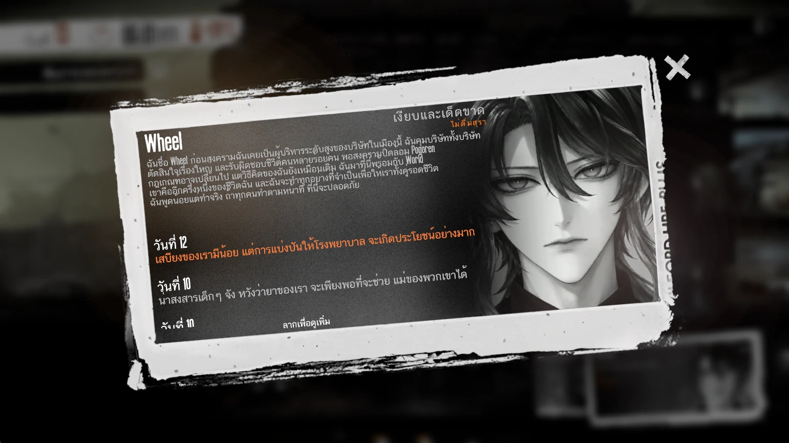
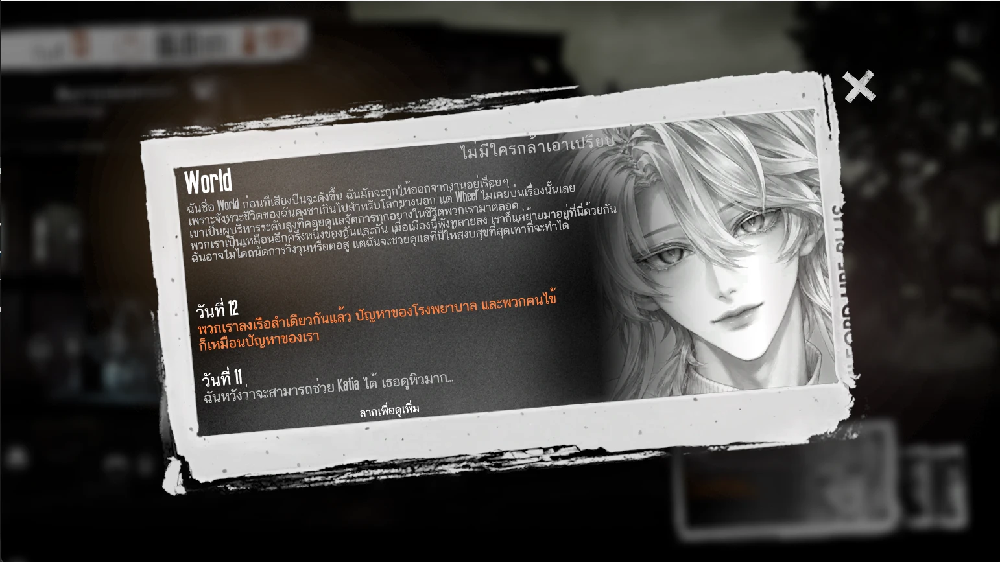
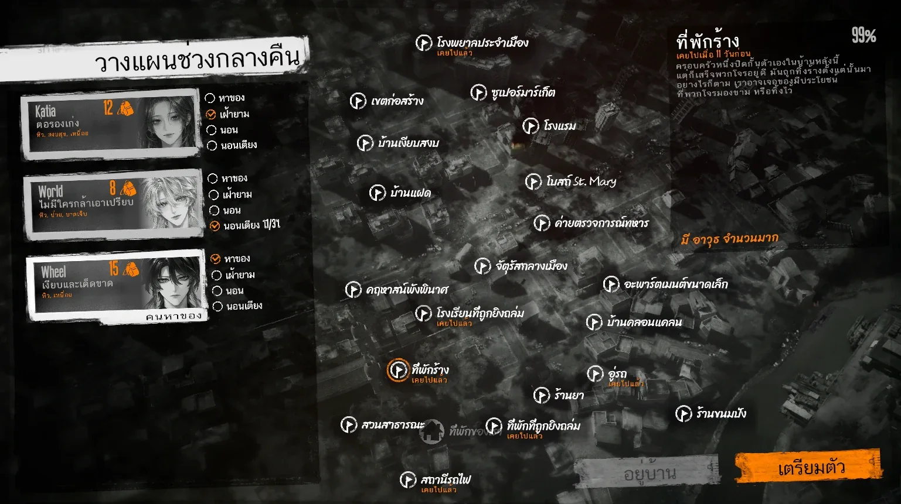
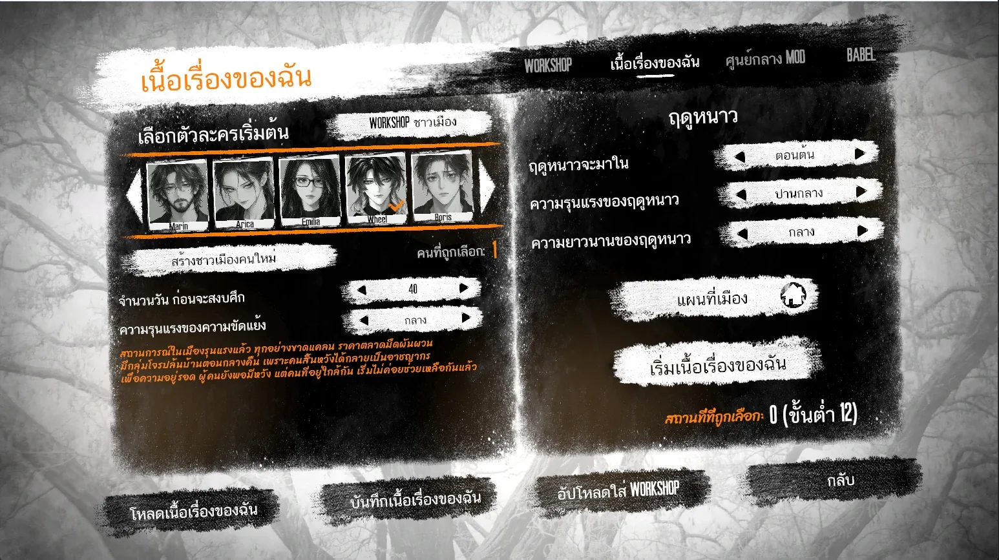
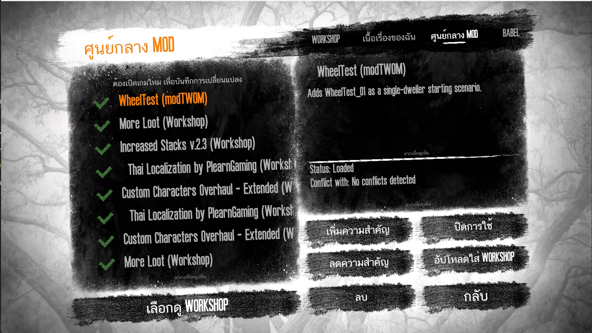
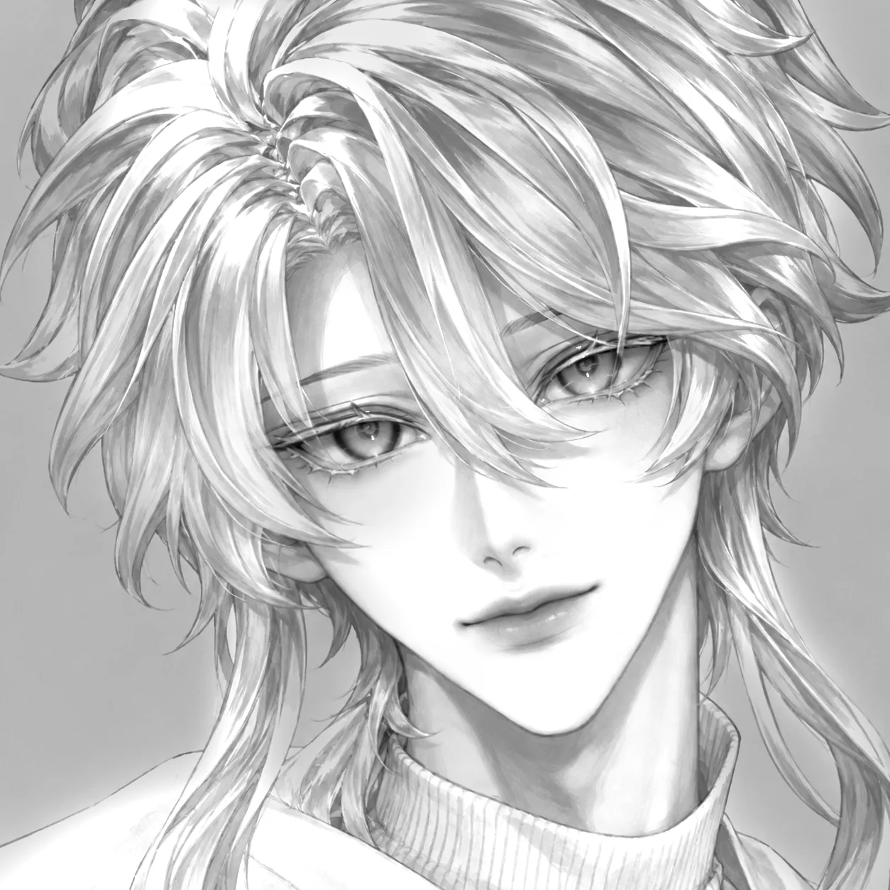

This War of Mine mod
Two of my own characters, Wheel and World, added to This War of Mine — with their backstories and daily journal entries written in Thai.
- Year
- Year 4, Term 1
- Team / role
- Solo — my own characters
- Tools
- Game modding · Thai writing · AI image generation (portraits)
- Portraits
- AI-generated
- Status
- done

Problem
Bring two of my own characters into a game with a strong, specific look, so they sit in it naturally.
What I decided
- Characters only. The mod adds characters and replaces images — no new game logic beyond the original game.
- Thai in the game. I wrote Wheel’s and World’s backstories and their daily journal entries in Thai.
- Portraits made with AI. The 22 portraits are AI-generated in the game’s style; they are not hand-drawn.
Result
A mod the game loads, adding two characters, Wheel and World, with Thai text and 22 AI-generated portraits. It also replaces the portraits of some of the game’s original characters (for example, Katia). It does not change how the game plays.
Gallery






My role vs AI
Me: creating Wheel and World (my own characters), writing their backstories and daily journal entries in Thai, and building the mod so the game loads it. AI: the portraits. This is a character mod — it adds characters and replaces images, with no new game logic.